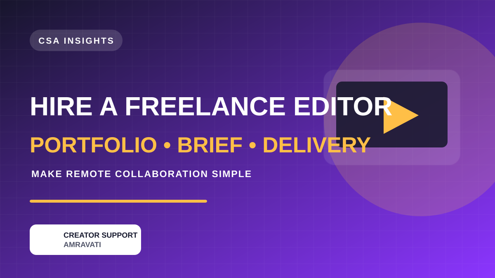
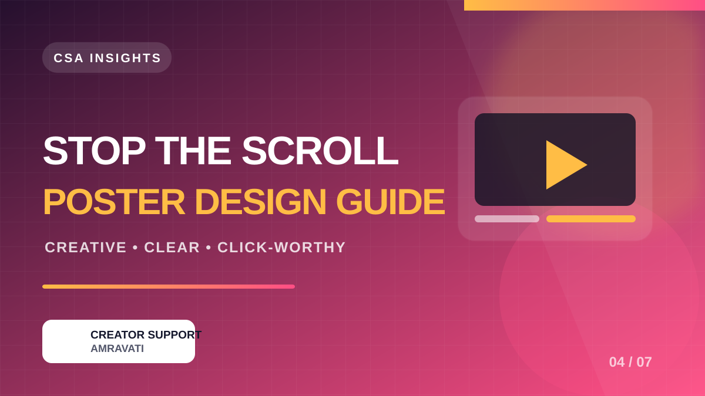
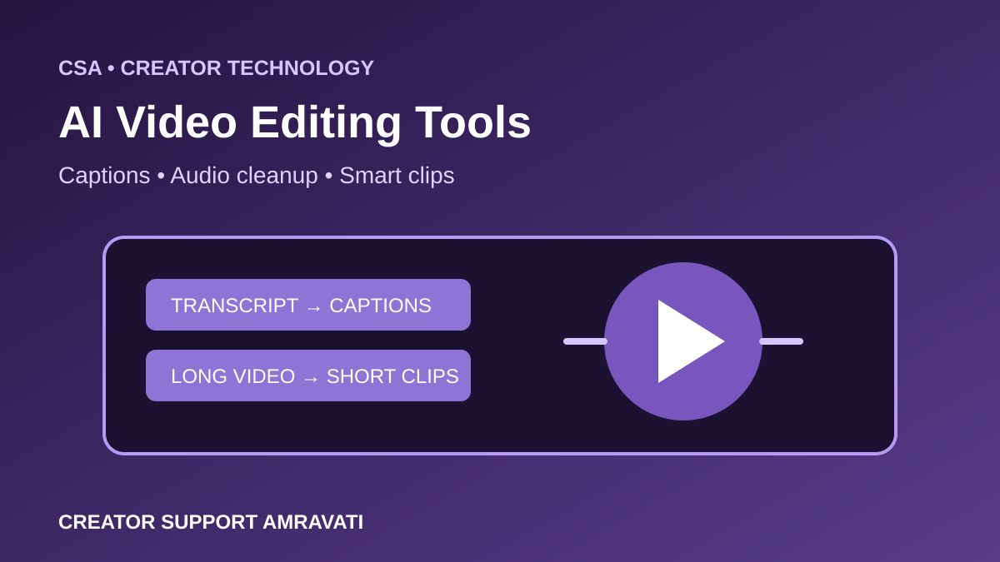
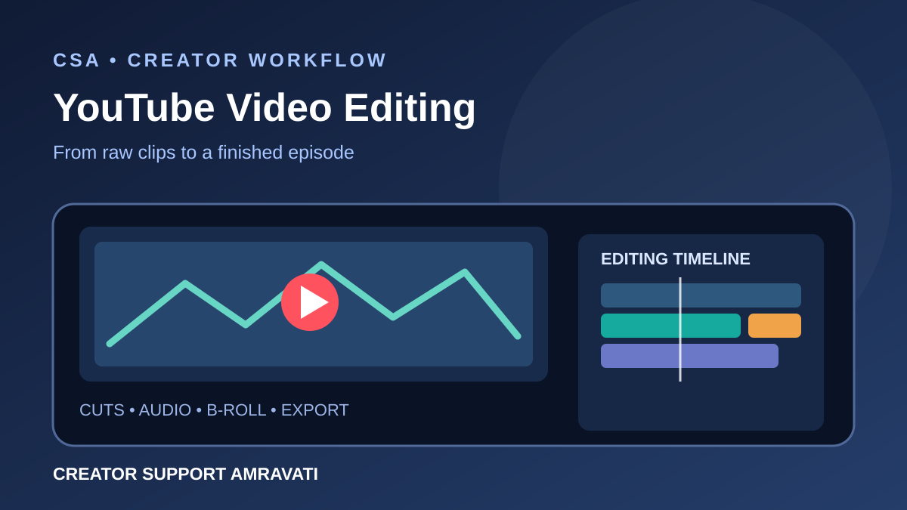
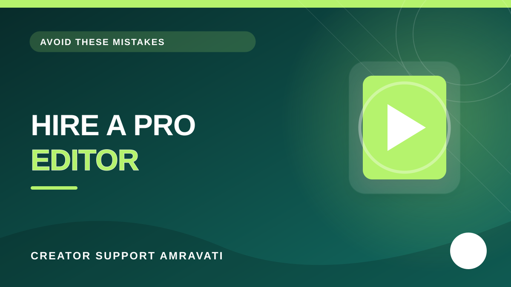

Video Ad Agency in India: How to Plan Ads That Communicate and Convert
A practical guide to choosing a video ad agency in India, planning campaign videos, creating platform-ready edits and measuring meaningful results.
पूरा लेख पढ़ें →वीडियो एडिटिंग, कंटेंट क्रिएशन, YouTube और डिजिटल मार्केटिंग की आसान व उपयोगी जानकारी—क्रिएटर्स और व्यवसायों के लिए।
सभी लेख देखें ↘सरल गाइड, काम की चेकलिस्ट और ऐसे सुझाव जिन्हें आप तुरंत अपना सकते हैं।
Creator Support Amravati वीडियो प्रोडक्शन, एडिटिंग, पॉडकास्ट रिकॉर्डिंग और डिजिटल उपस्थिति के क्षेत्र में क्रिएटर्स तथा स्थानीय व्यवसायों के साथ काम करता है। हमारे लेखों में उपयोगी प्रोडक्शन चेकलिस्ट और प्रोजेक्ट प्लानिंग से मिली सीख शामिल होती है। हम व्यूज़, रैंकिंग या बिक्री की गारंटी नहीं देते।
जहाँ लागू हो, उदाहरणों को प्लानिंग उदाहरण या CSA के प्रोजेक्ट अनुभव के रूप में स्पष्ट किया जाता है। प्लेटफॉर्म के फीचर और नीतियाँ बदल सकती हैं, इसलिए संबंधित गाइड में दिए आधिकारिक स्रोतों से जानकारी जाँचें। कोई गलती दिखे या सवाल हो तो हमारी टीम से संपर्क करें.
हमारी नई गाइड पढ़ें
A practical guide to choosing a video ad agency in India, planning campaign videos, creating platform-ready edits and measuring meaningful results.
पूरा लेख पढ़ें →
Searching for a video editing agency near you? Learn how to compare local studios, remote editors, portfolios, pricing, delivery and project fit.
पूरा लेख पढ़ें →
A complete guide to hiring a video editor, assessing editing skills, writing a brief, comparing quotes and managing revisions for business or creator content.
पूरा लेख पढ़ें →
Compare video editing companies by specialisation, portfolio, workflow, pricing, revisions, file security and delivery standards before choosing a provider.
पूरा लेख पढ़ें →
Understand what a corporate video editor does, the skills required for business films, interviews, training videos and brand communication, and how to hire one.
पूरा लेख पढ़ें →Learn how video editors can find clients through positioning, portfolios, referrals, outreach, local businesses, content marketing and repeatable service packages.
पूरा लेख पढ़ें →A practical guide to choosing a custom video editing agency in the USA, comparing creative fit, workflows, deliverables, communication and remote production support.
पूरा लेख पढ़ें →Learn how to compare video editing agencies in the USA by portfolio, project scope, communication, post-production quality and deliverables.
पूरा लेख पढ़ें →A practical guide to professional video editing services in India, including formats, quality checks, pricing factors, remote workflows and choosing an editor.
पूरा लेख पढ़ें →Find out how to select a video editing agency in India for business videos, ads, YouTube, podcasts and social media content with clear scope and quality checks.
पूरा लेख पढ़ें →Explore premium corporate video production services, from planning and filming to editing, sound, brand consistency and multi-platform delivery.
पूरा लेख पढ़ें →Learn how to hire an expert video editor online, assess portfolios, prepare a brief, compare quotes and manage revisions for reliable video delivery.
पूरा लेख पढ़ें →
Channel setup, niche, scripting, shooting, editing, SEO, Shorts, analytics, monetization और creator business के 14 step-by-step chapters.
पूरा Course शुरू करें →Professional workflow, clean audio, colour, captions, delivery और editor चुनने की practical checklist पढ़ें।
पूरा लेख पढ़ें →
ऑनलाइन एडिटर, मुफ्त प्लान की सीमाएँ, प्राइवेसी और एक्सपोर्ट क्वालिटी की जानकारी।
पूरा लेख पढ़ें →पोर्टफोलियो की तुलना, एडिटिंग ब्रीफ तैयार करने और ऑनलाइन फ्रीलांस एडिटर चुनने का तरीका।
पूरा लेख पढ़ें →एडिटिंग क्वालिटी, काम के दायरे, कीमत और डिलीवरी की तुलना के लिए उपयोगी चेकलिस्ट।
पूरा लेख पढ़ें →Reels, YouTube, पॉडकास्ट और विज्ञापनों के लिए एडिटिंग के प्रकार और डिलीवरी समझें।
पूरा लेख पढ़ें →मुफ्त टूल से सिनेमैटिक कट, कलर, साउंड और एक्सपोर्ट करने की शुरुआती प्रक्रिया।
पूरा लेख पढ़ें →
वीडियो एडिटिंग सेवाओं के SAC वर्गीकरण, SAC 999613 और इनवॉइस से पहले GST विशेषज्ञ से क्या जाँचें—जानें।
पूरा लेख पढ़ें →
स्थानीय एडिटर का पोर्टफोलियो, रिविज़न और काम की शर्तें जाँचें। अमरावती या आसपास बुकिंग से पहले फुटेज तैयार रखें।
पूरा लेख पढ़ें →
स्पष्ट हेडलाइन, सेवाओं की सूची, पोर्टफोलियो, संपर्क जानकारी और प्रभावी CTA के साथ प्रोफेशनल पोस्टर बनाएं।
पूरा लेख पढ़ें →
सर्विस पेज, शो-रील, कीमत की जानकारी, प्रोजेक्ट ब्रीफ, सुरक्षित फाइल ट्रांसफर, FAQs और संपर्क विकल्प की जानकारी।
पूरा लेख पढ़ें →
ऑनलाइन एडिटिंग सेवाओं की तुलना, फाइल भेजना, एडिटर को ब्रीफ देना, रिविज़न और फुटेज की सुरक्षा समझें।
पूरा लेख पढ़ें →
पोर्टफोलियो, स्थानीय समन्वय, ऑनलाइन वर्कफ़्लो और प्रोजेक्ट कोटेशन की तुलना के लिए यह चेकलिस्ट अपनाएं।
पूरा लेख पढ़ें →
Reels, Shorts और रोज़मर्रा के वीडियो के लिए CapCut, VN, InShot, YouCut, Edits और Filmora की तुलना करें।
पूरा लेख पढ़ें →
DaVinci Resolve, Shotcut, Kdenlive और Clipchamp के साथ PC की ज़रूरतें और परफॉर्मेंस टिप्स जानें।
पूरा लेख पढ़ें →
AI की मदद से कैप्शन, ट्रांसक्रिप्ट, ऑडियो क्लीनअप और लंबे वीडियो से छोटी क्लिप बनाने का तरीका।
पूरा लेख पढ़ें →
मोबाइल Reels, Shorts और डेस्कटॉप एडिटिंग के लिए CapCut के विकल्प जानें।
पूरा लेख पढ़ें →
सही प्रोफेशनल एडिटर चुनने के लिए वर्कफ़्लो, कलर, ऑडियो, हार्डवेयर और लागत की तुलना करें।
पूरा लेख पढ़ें →
फुटेज व्यवस्थित करने, स्टोरी कट, ऑडियो क्लीनअप, B-roll, कैप्शन और फाइनल एक्सपोर्ट की चरणबद्ध प्रक्रिया।
पूरा लेख पढ़ें →
कैमरा सिंक, साफ आवाज़, मल्टी-कैमरा कट, कैप्शन, एपिसोड चैप्टर और सोशल क्लिप समझें।
पूरा लेख पढ़ें →
एडिटर को फुटेज भेजने से पहले कैमरा फाइलें, ऑडियो, फोल्डर, प्रोजेक्ट नोट्स, परमिशन और अपलोड व्यवस्थित करें।
पूरा लेख पढ़ें →
9:16 फ्रेमिंग, पढ़ने योग्य कैप्शन, हुक, गति, सेफ ज़ोन, म्यूजिक परमिशन और मोबाइल क्वालिटी जाँचें।
पूरा लेख पढ़ें →
पोर्टफोलियो, काम का दायरा, रिविज़न, समय, प्राइवेसी, अधिकार और डिलीवरी की शर्तें जाँचें।
पूरा लेख पढ़ें →
एडिटिंग कोटेशन किन बातों पर निर्भर करता है, एडिटर को क्या भेजें और Reels, YouTube व प्रमोशनल वीडियो कैसे प्लान करें।
पूरा लेख पढ़ें →
क्लिप भेजने से पहले हुक, फुटेज, कैप्शन, ब्रांड संदेश और डिलीवरी फॉर्मेट तय करें।
पूरा लेख पढ़ें →
10 उपयोगी वीडियो आइडिया, वीडियो की सरल संरचना, रिकॉर्डिंग चेकलिस्ट और 30-दिन की व्यावहारिक शुरुआत।
पूरा लेख पढ़ें →
सही बिज़नेस जानकारी, उपयोगी फोटो, ग्राहक रिव्यू और पूछताछ बढ़ाने वाली वेबसाइट के लिए व्यावहारिक कदम।
पूरा लेख पढ़ें →
सात तरह की पोस्ट, आसान साप्ताहिक योजना और केवल लाइक्स नहीं बल्कि पूछताछ मापने के तरीके।
पूरा लेख पढ़ें →
ऑडियंस तय करें, कंटेंट पिलर चुनें, नियमित शेड्यूल बनाएं और दर्शकों के फीडबैक से सुधार करें।
पूरा लेख पढ़ें →
YPP, विज्ञापन आय, स्पॉन्सरशिप, एफिलिएट लिंक और सर्विस से कमाई के तरीके—बिना अवास्तविक दावों के।
पूरा लेख पढ़ें →
सर्च इंटेंट समझें, सही टाइटल लिखें, पढ़ने योग्य थंबनेल बनाएं और Analytics से सुधार करें।
पूरा लेख पढ़ें →
चैनल सेटअप, रिकॉर्डिंग, एडिटिंग, पब्लिशिंग और Studio Analytics सीखने के लिए पहले महीने की योजना।
पूरा लेख पढ़ें →
फोन या कैमरे से उपयोगी बिज़नेस Reels प्लान, शूट, एडिट और पब्लिश करना सीखें।
पूरा लेख पढ़ें →
फॉर्मेट, माइक्रोफोन, कमरे की ध्वनि, कैमरा एंगल, एडिटिंग, पब्लिशिंग और प्रोडक्शन ब्रीफ के साथ पॉडकास्ट प्लान करें।
पूरा लेख पढ़ें →
डोमेन, होस्टिंग, पेज, फॉर्म, कंटेंट, मेंटेनेंस और लॉन्च जाँच सहित वेबसाइट की लागत समझें।
पूरा लेख पढ़ें →
स्थानीय व्यवसाय के लिए लक्ष्य, कंटेंट पिलर, पोस्टिंग, अप्रूवल और पूछताछ मापने की व्यावहारिक योजना बनाएं।
पूरा लेख पढ़ें →
Google Business Profile की सही जानकारी, सर्विस पेज, रिव्यू, फोटो और पूछताछ ट्रैकिंग के साथ Local SEO समझें।
पूरा लेख पढ़ें →
होम या पॉडकास्ट स्टूडियो और कैमरा रेंटल के लिए ऑडियो, लाइटिंग, पावर, स्टोरेज, सुरक्षा और हैंडओवर की चेकलिस्ट।
पूरा लेख पढ़ें →
स्थानीय व्यवसायों के लिए भरोसेमंद ब्रांड वीडियो की योजना, कहानी, अलग-अलग प्लेटफॉर्म के एडिट और कैंपेन परिणाम समझने की गाइड।
पूरा लेख पढ़ें →
पेज संरचना, टाइटल, मोबाइल उपयोग, इंटरनल लिंक, इमेज, साइटमैप और Search Console की व्यावहारिक चेकलिस्ट।
पूरा लेख पढ़ें →
ऑडियंस, हुक, रूपरेखा, स्क्रिप्ट, ऑडियो, कैमरा, लाइटिंग, फाइल, थंबनेल और पब्लिशिंग के बाद समीक्षा की पूरी तैयारी।
पूरा लेख पढ़ें →
भारत में YouTube के 1,000 views की कमाई तय नहीं होती। RPM, CPM, Shorts और long-form videos, audience location और monetization eligibility को आसान हिंदी में समझें।
पूरा लेख पढ़ें →
YouTube Shorts रोज कितने upload करें, posting schedule कैसे बनाएं, quality और consistency कैसे बनाए रखें—नए creators के लिए practical Hindi guide।
पूरा लेख पढ़ें →
बिना fake subscribers खरीदे YouTube पर 1,000 genuine subscribers पाने की strategy, content planning, Shorts, long videos और analytics की हिंदी guide।
पूरा लेख पढ़ें →
YouTube channel को free में grow करने की practical strategy: niche selection, SEO, Shorts, thumbnails, audience retention, collaborations और 30-day action plan।
पूरा लेख पढ़ें →